This matrix shows different future worlds based on how humans, nature, society, and individuality are connected.
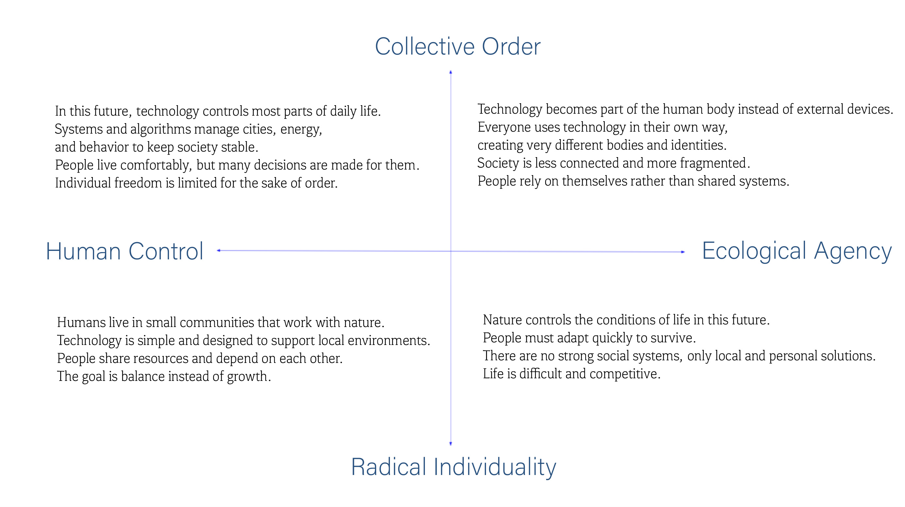I chose the third Quadrant: Symbiotic Communities as my future scenario. I am interested in a future where humans do not try to control nature, but live together with it. Instead of large systems and fast technology, this world focuses on small communities, simple tools, and balance with the environment. This future feels calm, believable, and meaningful, especially in response to climate change and resource problems. This quadrant is also suitable for simple object design, because technology in this world is not complex or high-tech, but quiet and functional.
In this future, people live in small, local communities that are closely connected to nature. Technology is designed to support natural systems instead of replacing them. Energy, water, and resources come from the environment and are shared by the community. Objects are not mass-produced but adapted to local needs. Many tools look organic and feel more like living things than machines. The goal of this society is not growth, but long-term balance and survival.
Symbiotic Energy Core: The object I designed is a Symbiotic Energy Core. This object provides a small amount of energy for daily use, such as light or heat. It does not produce energy by force, but works together with its environment. The core absorbs energy from natural sources and stores it inside. The form of the object is simple and organic, similar to a stone or seed. It has a soft outer shell and a glowing center, showing the energy inside. The glow changes based on how much energy is stored, allowing people to understand its state without screens or numbers.
1. I started with a simple sketch of the object, focusing on its organic shape and glowing core.

2. I created a 3D model of the object, refining its form and adding details to the core.
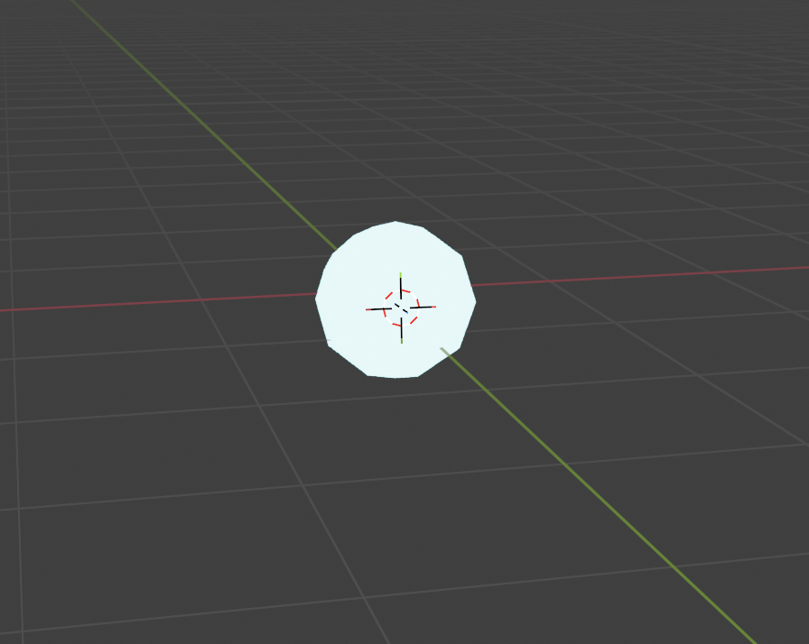 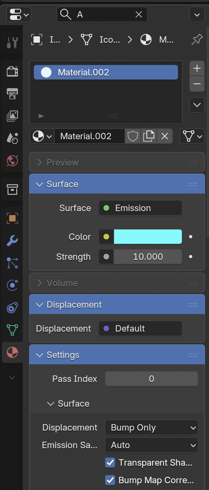3. I added details to the shall.
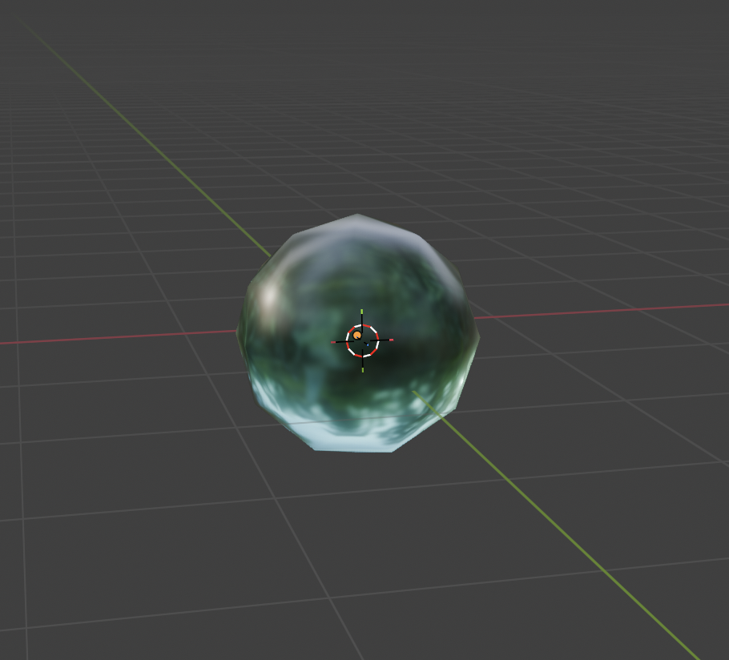 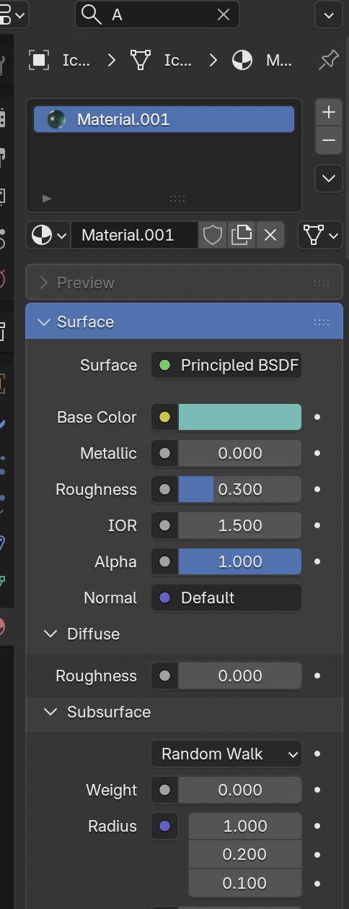4. I experimented with different materials and textures to give the object a natural look and feel. I also added the light
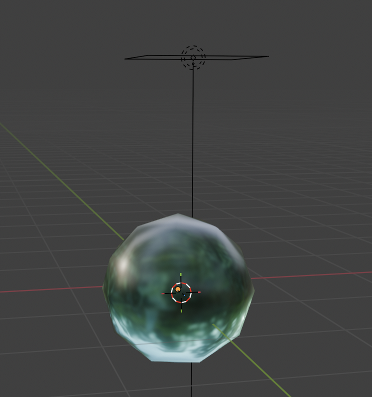5. I created a plane
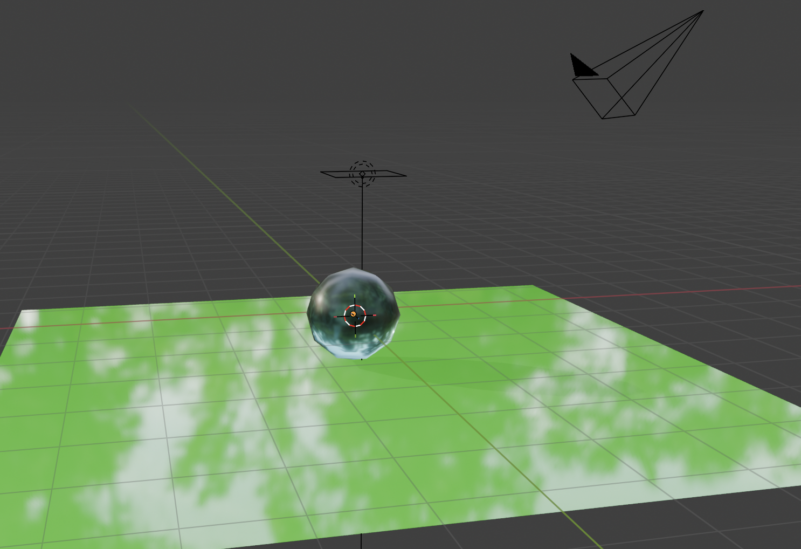6. In rendered mode
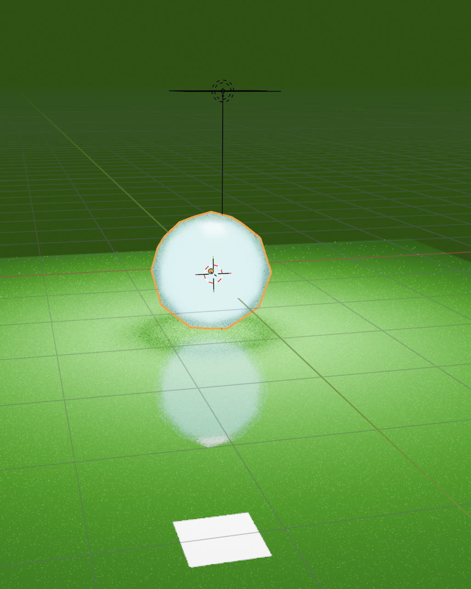7. Rendered picture

8. adjusted details to make it more realistic
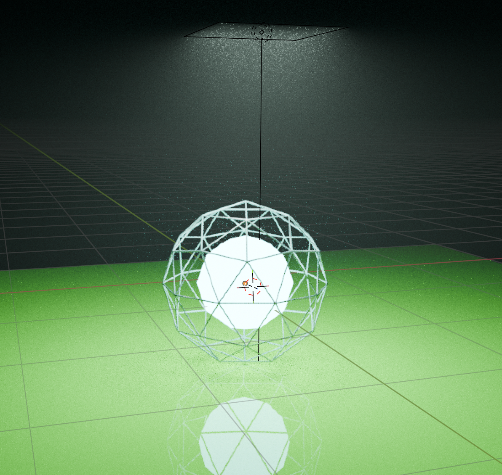9. change the plane color
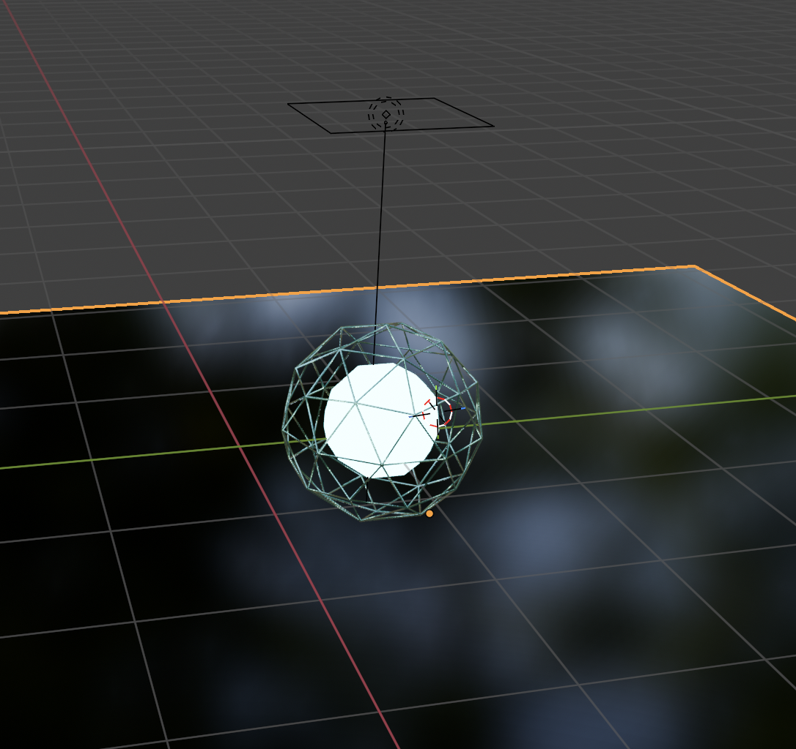10. added the background environment
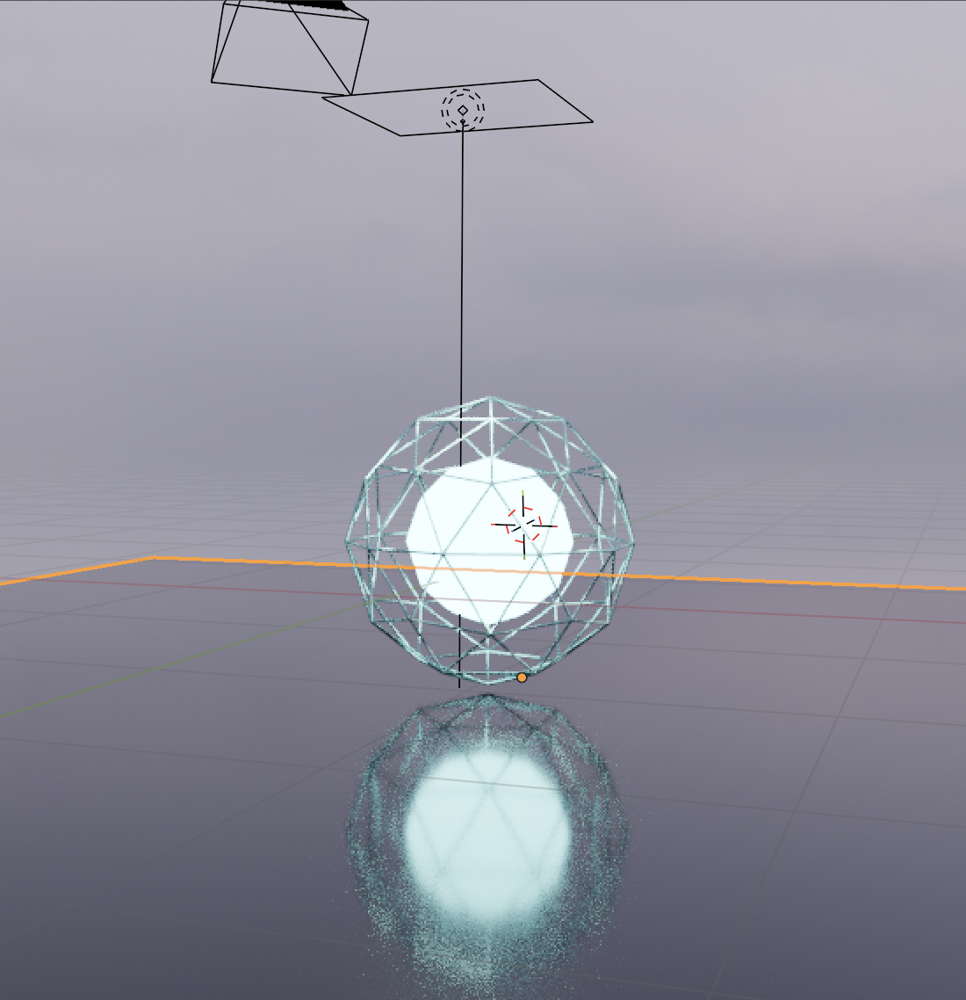This is the final work showcasing the Symbiotic Energy Core in its intended environment.
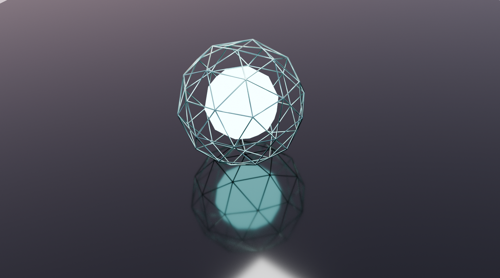